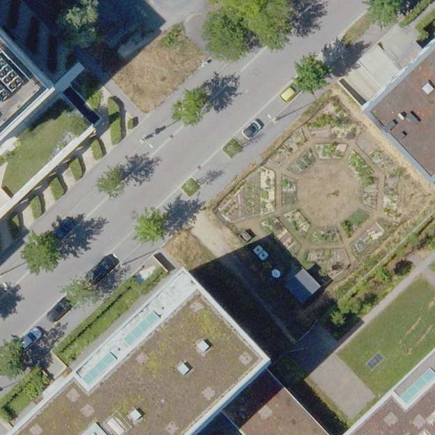

Beetdetails
Rückblick 2027 · Schreibgeschützt
Aufteilung
Breite
Streifen
- Kultur
- Unbelegt
- Anbaudaten
- Offen
Abnehmend
Rückblick 2027 · Schreibgeschützt

Rückblick 2027 · Schreibgeschützt
Rückblick 2027 · Schreibgeschützt